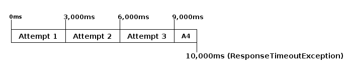

Automatic retry¶
When a client gets an error response, it might want to retry the request depending on the response. This can be accomplished using a decorator, and Armeria provides the following implementations out-of-the box.
Both behave the same except for the different request and response types. So, let’s find out what we can do with RetryingClient.
RetryingClient¶
You can just use the decorator() method in ClientBuilder to build a RetryingHttpClient:
import com.linecorp.armeria.client.ClientBuilder;
import com.linecorp.armeria.client.HttpClient;
import com.linecorp.armeria.common.HttpRequest;
import com.linecorp.armeria.common.HttpResponse;
import com.linecorp.armeria.client.retry.RetryingHttpClient;
import com.linecorp.armeria.client.retry.RetryStrategy;
RetryStrategy strategy = RetryStrategy.onServerErrorStatus();
HttpClient client = new ClientBuilder(...)
.decorator(HttpRequest.class, HttpResponse.class,
RetryingHttpClient.newDecorator(strategy))
.build(HttpClient.class);
client.execute(...).aggregate().join();
or even simply,
import com.linecorp.armeria.client.HttpClientBuilder;
RetryStrategy strategy = RetryStrategy.onServerErrorStatus();
HttpClient client = new HttpClientBuilder(...)
.decorator(RetryingHttpClient.newDecorator(strategy))
.build();
client.execute(...).aggregate().join();
That’s it. The client will keep attempting until it succeeds or the number of attempts exceeds the maximum
number of total attempts. You can configure the maxTotalAttempts when making the decorator using
RetryingHttpClient.newDecorator(strategy, maxTotalAttempts). Meanwhile, the strategy will decide to
retry depending on the response. In this case, the client retries when it receives 5xx response error.
RetryStrategy¶
You can customize the strategy by implementing RetryStrategy.
import com.linecorp.armeria.client.retry.Backoff;
import com.linecorp.armeria.common.HttpStatus;
new RetryStrategy<HttpRequest, HttpResponse>() {
final Backoff backoff = RetryStrategy.defaultBackoff;
@Override
public CompletableFuture<Optional<Backoff>> shouldRetry(HttpRequest request,
HttpResponse response) {
return response.aggregate().handle((result, cause) -> { // Do not use get() or join()!
if (cause != null) {
if (cause instanceof ResponseTimeoutException) {
return Optional.of(backoff);
}
} else if (result.headers().status() == HttpStatus.CONFLICT) {
return Optional.of(backoff);
}
return Optional.empty(); // Return no backoff to stop retrying.
});
}
};
This will retry when the response’s status is 409 or ResponseTimeoutException is raised.
Note
We declare a Backoff as a member and reuse it when a strategy returns it, so that we do not return
a different Backoff instance for each shouldRetry(). RetryingClient internally tracks the
reference of the returned Backoff and increases the counter that keeps the number of attempts made so far,
and resets it to 0 when the Backoff returned by the strategy is not the same as before. Therefore, it is
important to return the same Backoff instance unless you decided to change your Backoff strategy. If you
do not return the same one, when the Backoff yields a different delay based on the number of retries,
such as an exponential backoff, it will not work as expected. We will take a close look into a Backoff
at the next section.
You can return a different Backoff according to the response.
import com.linecorp.armeria.client.ResponseTimeoutException;
import com.linecorp.armeria.common.HttpStatusClass;
new RetryStrategy<HttpRequest, HttpResponse>() {
final Backoff backoffOnServerErrorOrTimeout = RetryStrategy.defaultBackoff;
final Backoff backoffOnConflict = Backoff.fixed(100);
@Override
public CompletableFuture<Optional<Backoff>> shouldRetry(HttpRequest request,
HttpResponse response) {
return response.aggregate().handle((result, cause) -> {
if (cause != null) {
if (cause instanceof ResponseTimeoutException) {
return Optional.of(backoffOnServerErrorOrTimeout);
}
} else if (result.headers().status().codeClass() == HttpStatusClass.SERVER_ERROR) {
return Optional.of(backoffOnServerErrorOrTimeout);
} else if (result.headers().status() == HttpStatus.CONFLICT) {
return Optional.of(backoffOnConflict);
}
return Optional.empty();
});
}
};
Backoff¶
You can use a Backoff to determine the delay between attempts. Armeria provides Backoff implementations which produce the following delays out of the box:
- Fixed delay, created with
Backoff.fixed() - Random delay, created with
Backoff.random() - Exponential delay which is multiplied on each attempt, created with
Backoff.exponential()
Armeria provides RetryStrategy.defaultBackoff that you might use by default. It is exactly the same as:
Backoff.exponential(minDelayMillis /* 200 */, maxDelayMillis /* 10000 */, multiplier /* 2.0 */)
.withJitter(jitterRate /* 0.2 */);
The delay starts from minDelayMillis until it reaches maxDelayMillis multiplying by multiplier every
retry. Please note that the .withJitter() will add jitter value to the calculated delay.
For more information, please refer to the API documentation of the com.linecorp.armeria.client.retry package.
maxTotalAttempts vs per-Backoff maxAttempts¶
If you create a Backoff using .withMaxAttempts(maxAttempts) in a RetryStrategy, the RetryingClient
which uses the RetryStrategy will stop retrying when the number of attempts passed maxAttempts.
However, if you have more than one Backoff and return one after the other continuously, it will keep retrying
over and over again because the counter that RetryingClient internally tracks is initialized every time the
different Backoff is returned. To limit the number of attempts in a whole retry session, RetryingClient limits
the maximum number of total attempts to 10 by default. You can change this value by specifying
maxTotalAttempts when you build a RetryingClient:
RetryingHttpClient.newDecorator(strategy, maxTotalAttempts);
Or, you can override the default value of 10 using the JVM system property
-Dcom.linecorp.armeria.defaultMaxTotalAttempts=<integer>.
Per-attempt timeout¶
ResponseTimeoutException can occur in two different situations while retrying. First, it occurs when the time of whole retry session has passed the time previously configured using:
ClientBuilder.defaultResponseTimeoutMillis(millis);
// or..
ClientRequestContext.setResponseTimeoutMillis(millis);
You cannot retry on this ResponseTimeoutException. Second, it occurs when the time of individual attempt in retry has passed the time which is per-attempt timeout. You can configure it when you create the decorator:
RetryingHttpClient.newDecorator(strategy, maxTotalAttempts, responseTimeoutMillisForEachAttempt);
You can retry on this ResponseTimeoutException.
For example, when making a retrying request to an unresponsive service with responseTimeoutMillis = 10,000, responseTimeoutMillisForEachAttempt = 3,000 and disabled Backoff, the first three attempts will be timed out by the per-attempt timeout (3,000ms). The 4th one will be aborted after 1,000ms since the request session has reached at 10,000ms before it is timed out by the per-attempt timeout.

RetryingClient with logging¶
You can use RetryingClient with LoggingClient to log. If you want to log all of the requests and responses, decorate LoggingClient with RetryingClient. That is:
RetryStrategy strategy = RetryStrategy.onServerErrorStatus();
HttpClient client = new HttpClientBuilder(...)
.decorator(LoggingClient.newDecorator())
.decorator(RetryingHttpClient.newDecorator(strategy))
.build();
This will produce following logs when there are three attempts:
LoggingClient - Request: {startTime=..., length=..., duration=..., scheme=..., host=..., headers=[...]
LoggingClient - Response: {startTime=..., length=..., duration=..., headers=[:status=500, ...]
LoggingClient - Request: {startTime=..., length=..., duration=..., scheme=..., host=..., headers=[...]
LoggingClient - Response: {startTime=..., length=..., duration=..., headers=[:status=500, ...]
LoggingClient - Request: {startTime=..., length=..., duration=..., scheme=..., host=..., headers=[...]
LoggingClient - Response: {startTime=..., length=..., duration=..., headers=[:status=200, ...]
If you want to log the first request and the last response, no matter if it’s successful or not, do the reverse:
import com.linecorp.armeria.client.logging.LoggingClient;
RetryStrategy strategy = RetryStrategy.onServerErrorStatus();
HttpClient client = new HttpClientBuilder(...)
.decorator(RetryingHttpClient.newDecorator(strategy))
/* notice the order */ .decorator(LoggingClient.newDecorator())
.build();
This will produce only single request and response log pair regardless how many attempts are made:
LoggingClient - Request: {startTime=..., length=..., duration=..., scheme=..., host=..., headers=[...]
LoggingClient - Response: {startTime=..., length=..., duration=..., headers=[:status=200, ...]
Note
Please refer to Nested log, if you are curious about how this works internally.